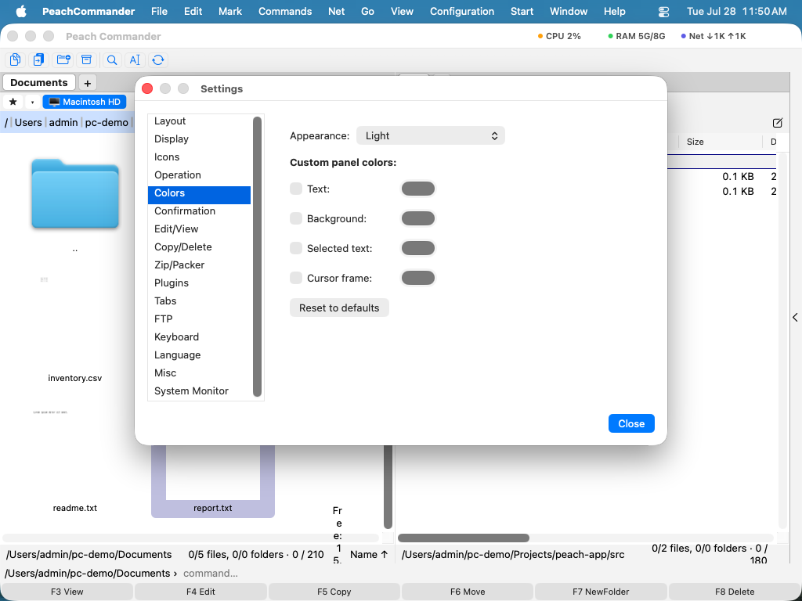

Aspetto
Peach Commander può adattarsi all'aspetto del resto del vostro Mac oppure assumere uno stile tutto suo. Potete seguire l'impostazione chiara o scura del sistema (oppure forzarne una), ricolorare i pannelli dei file, evidenziare i file per tipo e regolare la dimensione del carattere dell'elenco e il formato della data, così i pannelli si presentano esattamente come preferite.
Scegliere un tema di colori
Un tema sostituisce l’intera tavolozza dei pannelli in un solo passaggio.
- Aprite la finestra delle impostazioni scegliendo Configurazione > Opzioni…, oppure premete Cmd+,.
- Selezionate la pagina Colori.
- Scegliete dal menu Tema: - Sistema (predefinito) — nessun tema. I pannelli seguono l’impostazione Aspetto qui sotto, esattamente come hanno sempre fatto. È l’impostazione predefinita. - Chiaro / Scuro — fissa la tavolozza chiara o scura integrata, indipendentemente da ciò che fa macOS. - Norton Commander — l’aspetto blu e ciano del gestore di file DOS originale, nei suoi autentici colori CGA: pannelli blu, testo ciano, riga del cursore ciano chiaro e giallo per i file marcati.
Un tema porta con sé la propria base chiara/scura, così che pannelli a comparsa, barre di scorrimento e controlli standard vi si accordino: per questo il menu Aspetto è disattivato finché è selezionato un tema. I colori personalizzati dei pannelli (qui sotto) hanno comunque la precedenza sul tema.
 (Figura: la tavolozza Norton Commander — il blu, il ciano e il giallo CGA originali.)
(Figura: la tavolozza Norton Commander — il blu, il ciano e il giallo CGA originali.)
Il tema Norton Commander usa gli autentici valori CGA dell’originale del 1986: #0000AA blu, #00AAAA ciano, #55FFFF per la riga del cursore, #FFFF55 per i file marcati. La barra del cursore si inverte in testo scuro su ciano, come la disegnava l’originale, mentre i file marcati mantengono il loro giallo.
 (Figura: la barra del cursore si inverte; i file marcati restano gialli.)
(Figura: la barra del cursore si inverte; i file marcati restano gialli.)
 (Figura: anche le finestre dell’applicazione seguono il tema.)
(Figura: anche le finestre dell’applicazione seguono il tema.)
I temi riguardano solo i colori. La disposizione dei pannelli, le cornici e i caratteri restano invariati: Norton Commander non riporta i bordi a doppia linea né il carattere raster del DOS.
Scrivere un tema personale
I temi sono semplici file di testo, uno per tema, in una cartella themes all’interno della vostra cartella di configurazione.
- Nella pagina Colori fate clic su Cartella dei temi…. La cartella viene creata se non esiste e, la prima volta che è vuota, Peach Commander vi inserisce un file commentato
example-norton.iniche elenca tutti i colori impostabili. - Copiate quel file, dategli un nuovo nome e modificatelo. Il nome del file (senza
.ini) è l’identificatore del tema; la rigaNameè ciò che mostra il menu Tema. - Salvate. Riaprite il menu Tema: il vostro tema è nell’elenco. Non serve riavviare.
Un tema minimo sono tre righe:
[Theme]
Name = Midnight
Base = dark
[Colors]
ListBackground = #101020
ListText = #C0C0D0
 (Figura: un tema caricato da un file nella cartella dei temi.)
(Figura: un tema caricato da un file nella cartella dei temi.)
Base sceglie la tavolozza integrata (light o dark) che fornisce tutti i colori non elencati, così scrivete solo ciò che volete cambiare. I colori si indicano come #RRGGBB. Le righe che iniziano con ; o # sono commenti.
Se qualcosa nel file è errato, Peach Commander salta quella singola riga e conserva il resto del tema: non rifiuta il file. Il motivo viene scritto nel registro di sistema, visibile in Console filtrando per [theme].
I nomi light, dark, norton e system appartengono ai temi integrati; un file che ne usa uno viene ignorato, così non può nascondere un tema fornito con l’applicazione. Se eliminate il file del tema selezionato, Peach Commander torna a Sistema (predefinito).
Impostare l'aspetto chiaro, scuro o di sistema
- Aprite la finestra delle impostazioni scegliendo Configurazione > Opzioni…, oppure premete Cmd+,.
- Selezionate la pagina Colori.
- Dal menu Aspetto, scegliete una tra: - Sistema (segui macOS) — si adatta automaticamente all'attuale impostazione chiara/scura del Mac. - Chiaro — usa sempre la palette chiara. - Scuro — usa sempre la palette scura.

(Figura: la pagina Colori: scegliete un aspetto e sovrascrivete i singoli colori dei pannelli.)Personalizzare i colori dei pannelli
Nella stessa pagina Colori, sotto Colori personalizzati dei pannelli, attivate la casella accanto a un elemento qualsiasi e scegliete un colore dal selettore accanto:
- Testo — i nomi dei file e delle cartelle.
- Sfondo — lo sfondo del pannello.
- Testo selezionato — il colore usato per i file selezionati.
- Cornice del cursore — il contorno attorno all'elemento corrente.
Lasciate una casella disattivata per mantenere il colore predefinito di quell'elemento. Fate clic su Ripristina i valori predefiniti per cancellare tutte le personalizzazioni in una volta.
Colorare i file per tipo
- Aprite Configurazione > Opzioni… e selezionate la pagina Visualizzazione.
- Fate clic su Colori per tipo di file….
- Aggiungete una regola con una maschera di nome come
*.zipo*.txt, poi scegliete un colore per i file corrispondenti. - Usate Aggiungi regola per altre maschere; fate clic su Fine per salvare o su Annulla per scartare.
I file corrispondenti appariranno quindi nel colore scelto in entrambi i pannelli.
Regolare la dimensione del carattere e il formato della data
Nella pagina Visualizzazione potete anche:
- Scegliere la Dimensione del carattere dell'elenco dei pannelli in punti.
- Immettere un pattern di Formato data per controllare come vengono mostrate le date di modifica; lasciatelo vuoto per usare il formato regionale del vostro Mac. Un'anteprima in tempo reale appare sotto il campo mentre digitate.
- Attivare lo Sfondo delle righe alternate per un effetto zebrato che rende gli elenchi lunghi più facili da scorrere.
Scorciatoie
| Azione | Scorciatoia |
|---|---|
| Aprire le impostazioni | Cmd+, |
Note
- Il menu Aspetto agisce solo finché il tema è Sistema (predefinito); un tema definisce la propria base.
- Un tema colora anche le finestre dell’applicazione. Le finestre di sistema — Apri, Registra, i selettori di colore e carattere e gli avvisi — mantengono il loro aspetto standard, così come le finestre aperte dai plugin.
- L'impostazione Aspetto definisce lo stile dei pannelli dei file. Le finestre di dialogo di sistema, gli avvisi e i controlli standard seguono sempre macOS.
- Il visualizzatore di file integrato usa palette di evidenziazione della sintassi corrispondenti per chiaro e scuro, così il codice evidenziato resta leggibile in entrambi gli aspetti.
- I colori personalizzati e le regole per tipo di file vengono salvati con le vostre impostazioni e riapplicati ogni volta che aprite l'app.